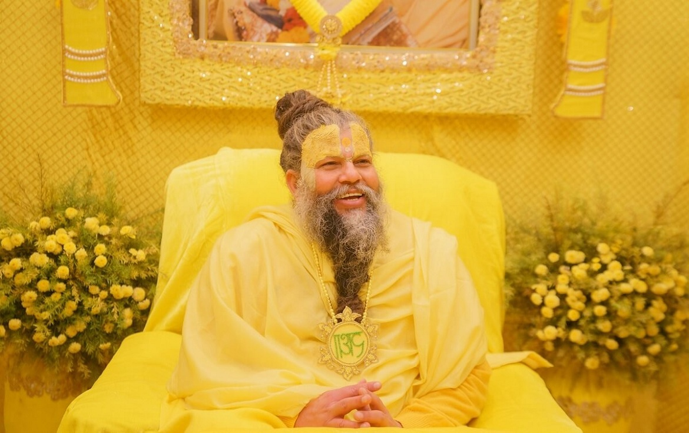
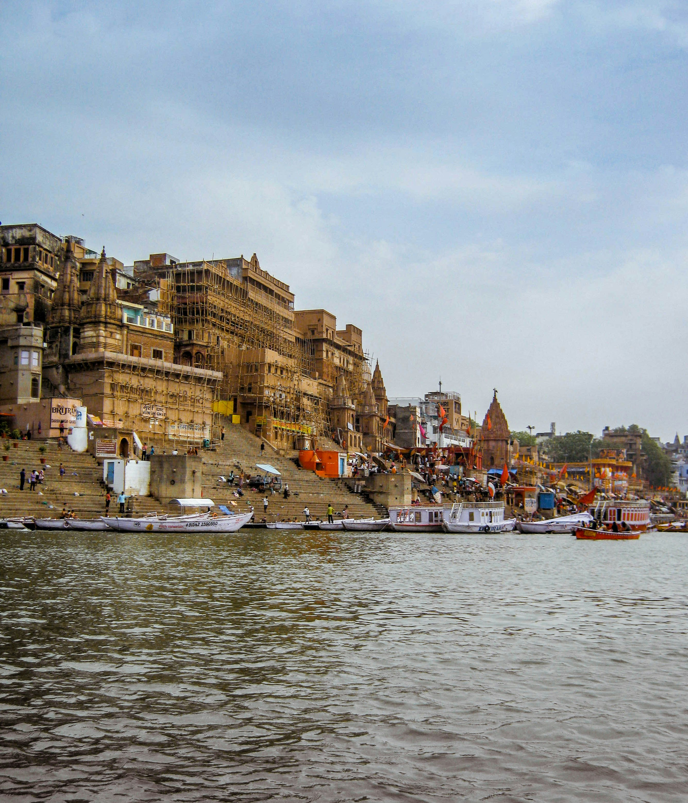
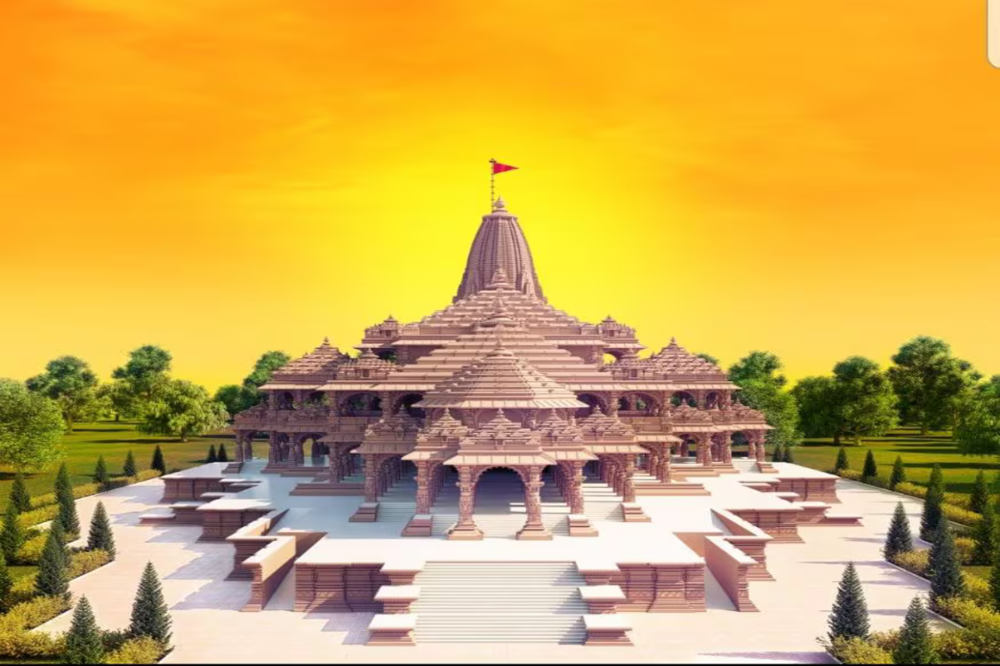

UTTAR PRADESH
Mathura
Explore the sacred birthplace of Lord Krishna and its ancient temples and ghats.
Explore Mathura →Explore India's ancient temples, sacred cities, peaceful ghats and spiritual destinations.
Discover places where history, culture and spirituality come together.
Explore the sacred birthplace of Lord Krishna and its ancient temples and ghats.
Explore Mathura →
Discover famous temples, sacred streets and the timeless spiritual atmosphere of Vrindavan.
Explore Vrindavan →
Experience ancient ghats, Ganga Aarti and one of India's oldest living cities.
Explore Varanasi →
Explore the sacred city of Ram and its rich cultural and spiritual heritage.
Explore Ayodhya →